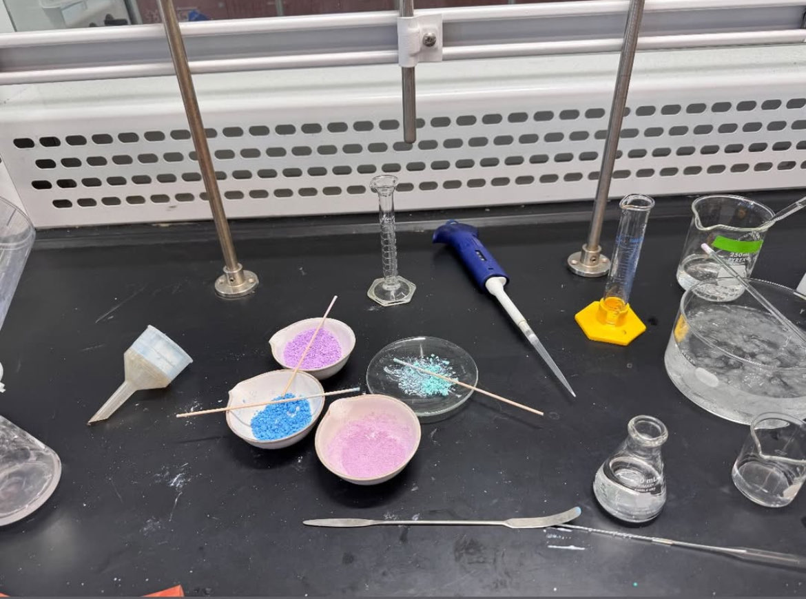
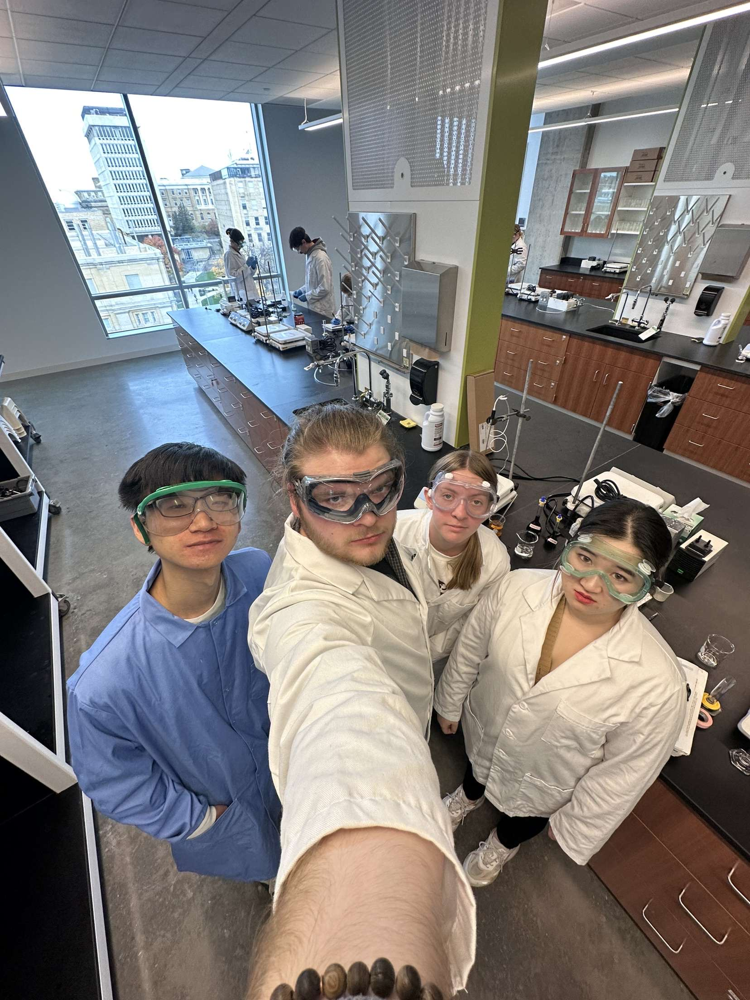

Education
Master of Science in Pharmaceutical Sciences: Applied Drug Development Program
University of Wisconsin- Madison: School of Pharmacy (Sept. 2025- Dec. 2026)
Relevant Courses
Bachelor of Science in Chemistry
University of Wisconsin- Madison (2021-2025)
Chemistry Courses
- CHEM 512: ADVANCED SYNTHESIS AND LABORATORY TECHNIQUES.
- Synthesis, purification, and characterization of synthesized compounds.
- CHEM 636: TOPICS IN CHEMICAL INSTRUMENTATION: INTRODUCTION TO NMR.
- Theory and practice of nuclear magnetic resonance (NMR)spectroscopy.
- CHEM 346: INTERMEDIATE ORGANIC CHEMISTRY LABORATORY.
- Multi-step synthetic processes and advanced experimental techniques.


Tomah High School
(2017-2021)